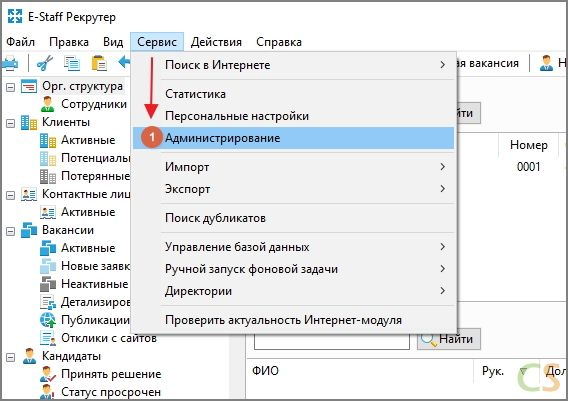

Пошаговая инструкция по экспорту кандидатов из E-Staff в CleverStaff
Сценарий экспорта предназначен для выгрузки всех или отдельных типов объектов системы E-Staff (структурных подразделений, кандидатов, вакансий и т.д.) во внутреннем XML-формате.
Шаг 1. Для создания карточки настроек нового сценария экспорта откройте раздел Сервис -> Администрирование (1)

Шаг 2. В администрировании, пункт Справочники–> Интеграция–> Сценарии экспорта и нажмите кнопку Новый элемент (2)
Шаг 3. Ввести данные для создания сценария
Откроется новое окно. Введите наименование сценария (3).
С помощью кнопки Просмотр укажите путь к папке, в которую будет производиться выгрузка (4).
Для выгрузки кандидатов вместе с комментариями выберите тип объектов для выгрузки "Кандидат, Событие" (5). Для выбора нескольких типов объектов удерживайте кнопку Ctrl на клавиатуре. Значение поля Начиная с даты определяет начальный момент времени, начиная с которого будут выгружены объекты системы при следующем запуске сценария. После успешного выполнения сценария экспорта данное поле автоматически заполнится текущей датой. При необходимости эту поле можно заполнить вручную требуемой начальной датой (6).
После заполнения всех полей нажмите кнопку “Сохранить и закрыть” (7).
Шаг 4. В ручном режиме сценарий экспорта запускается из главного меню программы командой Сервис –> Экспорт -> [наименование сценария экспорта] (8)
Шаг 5. Как выглядят файлы кандидатов из E-Staff
Шаг 6. Создаём ZIP-архив кандидатов из E-Staff
Шаг 7. Находим страницу импорта кандидатов в CleverStaff